Next: Tapering and stability
Up: gmredi
Previous: Griffies Skew Flux
Visbeck et al., 1996, suggest making the eddy coefficient,
 , a function of the Eady growth rate,
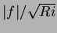. The formula involves a non-dimensional constant,
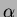, and a length-scale 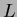:
, a function of the Eady growth rate,
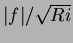. The formula involves a non-dimensional constant,
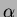, and a length-scale 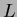:
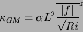
where the Eady growth rate has been depth averaged (indicated by the
over-line). A local Richardson number is defined
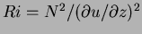 which, when combined with thermal wind gives:
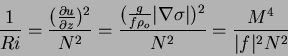
where 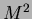 is defined
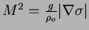.
Substituting into the formula for gives:
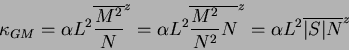
chris
2001-05-20